года в продуктовом UX/UI — полный цикл от идеи до итераций после релиза
⊹ Привет, я Катя · UX/UI-дизайнер
Люблю ясную логику, живую графику
и быстрые итерации. Работаю системно
— и довожу идеи до результата.
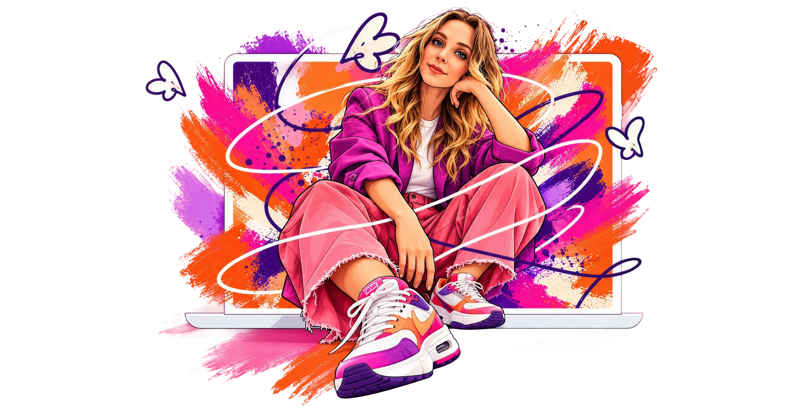
проектов: мобильные приложения, веб-сервисы, лендинги и конференции
в бизнесе, маркетинге и дизайне: от собственного бренда до продуктовой команды
01 · Работы
Проекты, которыми горжусь
01 / 08
AI Studio
Нейросеть превращает фото в видео. Тёмный интерфейс, где главное — контент.
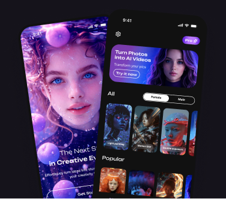
Cat House
Домики-виллы для кошек. Тёплый каталог, где товар продаёт атмосфера.
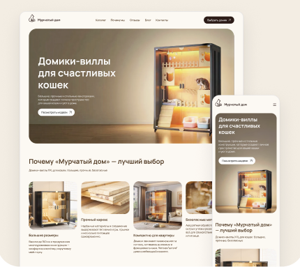
ChaWo
Лента соцсети в двух стилях — Glass и Editorial, светлая и тёмная.
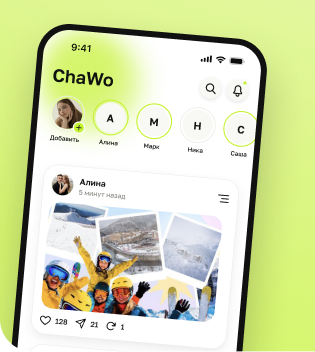
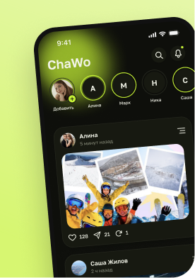
BigTech Camp
Карьерный лагерь для тех, кто хочет войти в большую технологическую компанию.
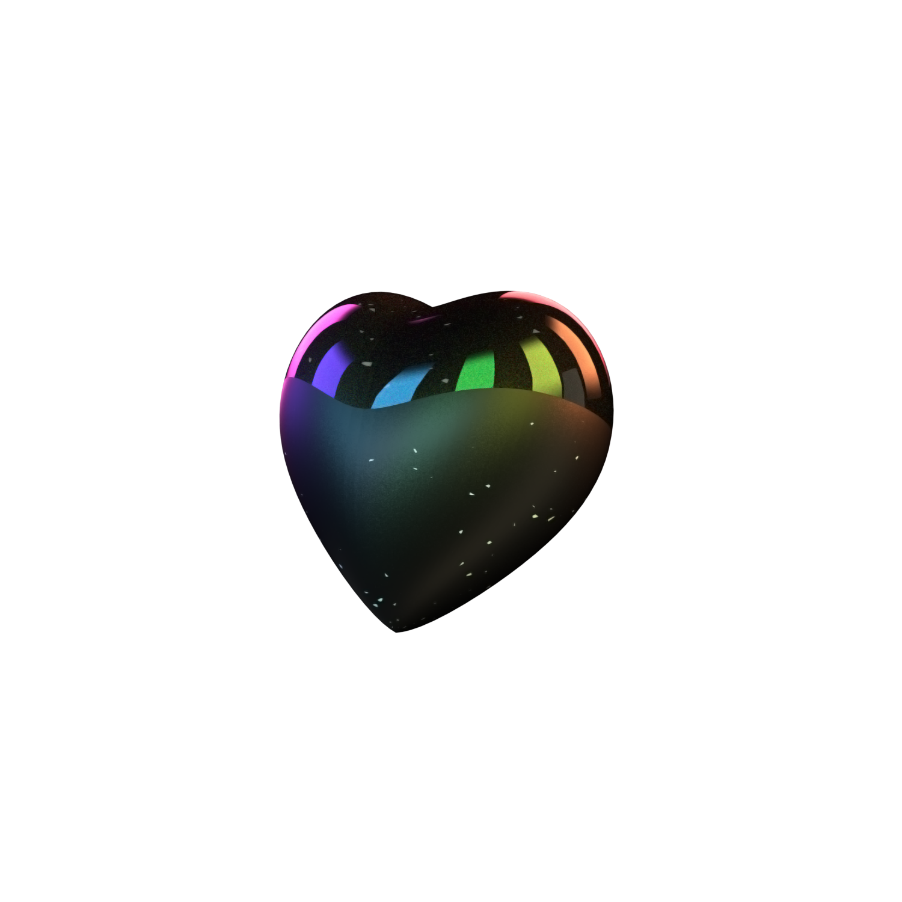
Workspace
Сервис для спокойной командной работы и прозрачного статуса задач.
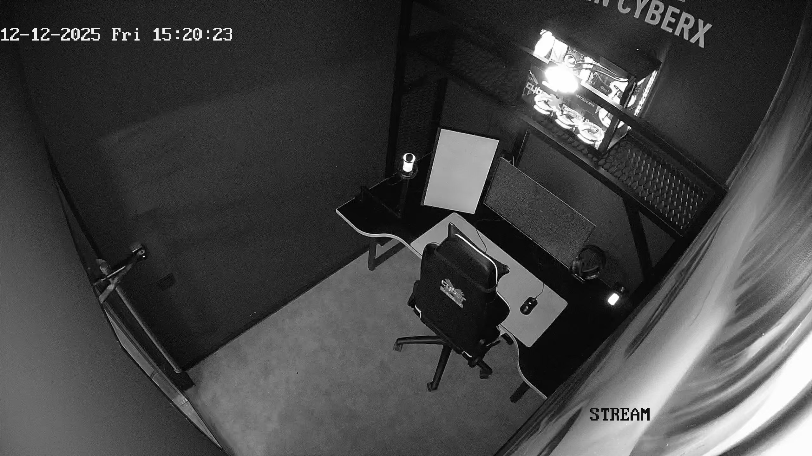
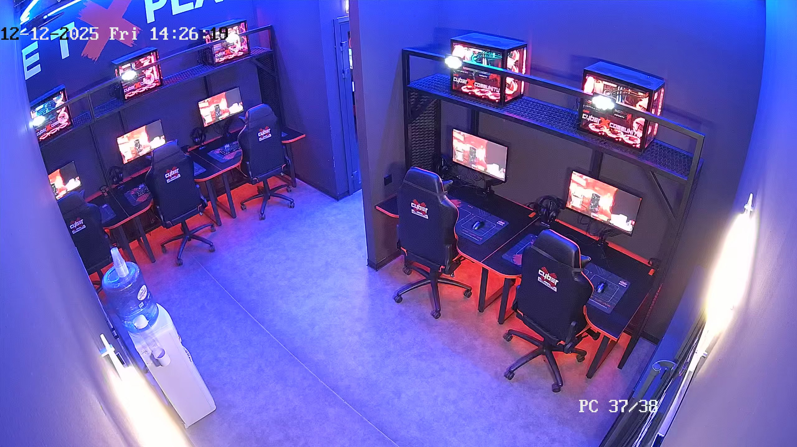
Mars Meal
Сервис доставки еды с космическим характером и яркой графикой.
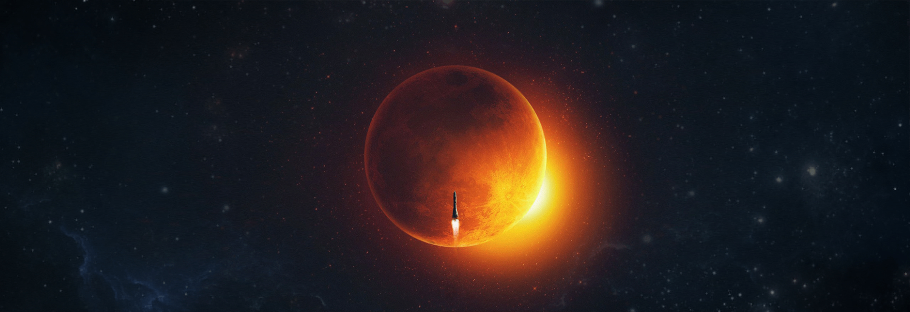
ANWIN
Каталог, где сложный выбор становится быстрым и понятным.
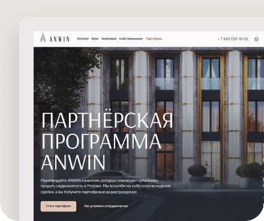
Полное портфолио
Покажу процесс, исследования и ещё больше макетов — напишите мне.
Подробнее ↗02 · Обо мне
Обо мне и как я работаю
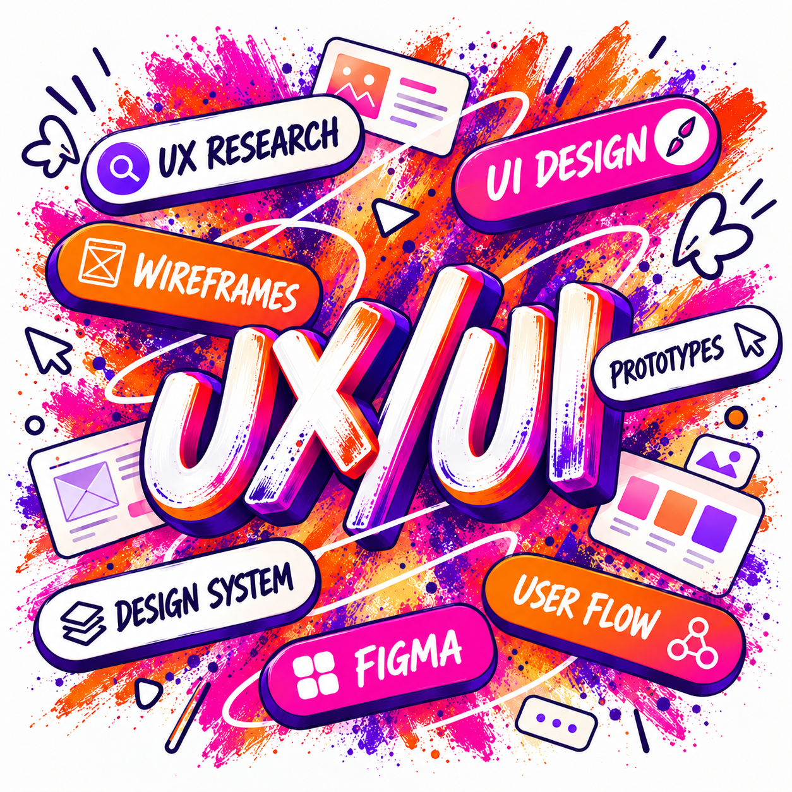
ProductResearchCreativity
Профиль
UX/UI-дизайнер с 3+ годами опыта. Веду интерфейс через весь цикл: исследование, прототипы, финальные макеты и итерации по продуктовым метрикам после запуска.
Собираю и развиваю дизайн-системы, проектирую адаптивные сайты и веб-сервисы, руковожу командой дизайнеров. Сильная сторона — скорость без потери качества: быстро перехожу от гипотезы к проверенному решению и довожу его до продакшена.
ПодходИсследование → прототип → тест → метрики
Сильные стороныДизайн-системы, адаптив, запуски
ФорматFull-time или проектная работа
Навыки
UI-дизайнUX-дизайнАнализ конкурентовПользовательские сценарииПрототипированиеДизайн-системыЮзабилити-тестыВеб-дизайнАдаптивный дизайнМоушн-дизайнПродуктовые метрикиУправление командой
Инструменты
FigmaTildaHTMLCSSClaudeChatGPTCodex
МГИМО
Московский государственный институт международных отношений
Коммерция (торговое дело) · высшее · 2020Цифровой маркетингБренд-менеджментРекламаУправление проектами
- Продуктовый дизайн — Uprock
- Tilda Pro — Tilda School
- Superpowered UX/UI — Wannabe
- UX/UI-дизайнер: профессиональная программа — Contented · Skillfactory
- Бренд-менеджмент и интегрированные маркетинговые коммуникации — Британская высшая школа дизайна
04 · Контакты
Контакты
Давайте сделаем что-то хорошее вместе. Пишите — отвечу в течение дня.
Месторасположениег. Москва